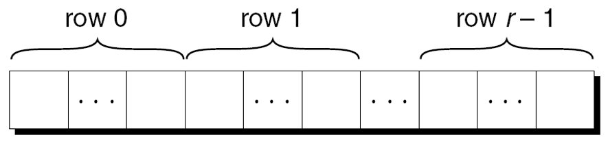

回顾: 用指针遍历数组
数组名作为指针
任务: 数组名与指针
程序: 数列反向 (指针版)
数组型实际参数
多维数组与指针
动态内存初识: malloc 与 free
课堂小测
int a[N], *p, sum = 0;
for (p = &a[0]; p < &a[N]; p++)
sum += *p;int a[N], sum = 0;
for (int i = 0; i < N; i++)
sum += *(a + i);11-1 的重点: 指针算术、比较、*p++; 用指针变量 p 遍历数组.
11-2 的重点: 数组名 a 本身作为指针; a[i] ≡ *(a + i); 数组参数、多维数组、动态内存.
同一个求和, 两种写法: 11-2 把 p 省略掉, 直接用数组名; 但 a 不能自增, 要移动还是用 p.
#include <stdio.h>
#define N 10
int main(void)
{
int a[N] = {1, 2, 3, 4, 5, 6, 7, 8, 9, 0};
int *p;
int sum = 0;
*a = 7; /* a[0] = 7 */
*(a + 1) = 12; /* a[1] = 12 */
printf("a[0] = %d, a[1] = %d\n", a[0], a[1]);
/* 原始写法: 从 &a[0] 走到 &a[N] */
for (p = &a[0]; p < &a[N]; p++)
sum += *p;
printf("sum (p = &a[0]) = %d\n", sum);
/* 简化写法: 数组名 a 就是首地址 */
sum = 0;
for (p = a; p < a + N; p++)
sum += *p;
printf("sum (p = a) = %d\n", sum);
/* a 是数组名, 不能自增; a++ 非法 (编译错误) */
/* a++; */
/* 指针变量可以移动: 走到值为 0 的元素 */
p = a;
while (*p != 0)
p++;
printf("第一个 0 在 a[%d]\n", (int)(p - a));
return 0;
}上一节我们用指针 p 遍历数组; 这一节看数组名 a 本身作为指针的用法. 假设 int a[10];:
a 在表达式中就是指向首元素的指针: a 与 &a[0] 的值相同.
一般情况, a + i 与 &a[i] 相同, *(a + i) 等价于 a[i].
数组名可以像指针一样解引用和参与指针算术.
但 a 是数组名, 不能被赋值: a++ 非法; 要移动就复制到 int *p.
运行结果: a[0] = 7, a[1] = 12; 两种写法的 sum 都是 61; 第一个 0 在 a[9].
任务: 令 int a[6] = {2, 4, 6, 8, 10, 12};
p 从 a 遍历到 a + 6, 求所有元素之和
i, 打印 a[i] 与 *(a + i)——两列的值应当相同
a、&a[0]、a + 1、&a[1], 观察数组名与首元素地址的关系
样例:
i=0: a[0]=2, *(a+0)=2
...
i=5: a[5]=12, *(a+5)=12
sum = 42
a = 0x7ffd1a2b, &a[0] = 0x7ffd1a2b
a + 1 = 0x7ffd1a2f, &a[1] = 0x7ffd1a2f提示: a + i 等价于 &a[i], *(a + i) 等价于 a[i]; 数组名不能自增 (a++ 非法), 遍历要用指针变量 p
p 遍历, 求和得到 42a[i] 与 *(a + i) 两列值相同a 与 &a[0] 的关系; 不使用 a++#include <stdio.h>
#define N 6
int main(void)
{
int a[N] = {2, 4, 6, 8, 10, 12};
int sum = 0;
for (int *p = a; p < a + N; p++)
sum += *p;
for (int i = 0; i < N; i++)
printf("i=%d: a[%d]=%d, *(a+%d)=%d\n",
i, i, a[i], i, *(a + i));
printf("sum = %d\n", sum);
printf("a = %p, &a[0] = %p\n",
(void *)a, (void *)&a[0]);
printf("a + 1 = %p, &a[1] = %p\n",
(void *)(a + 1), (void *)&a[1]);
return 0;
}sum = 42
i=0: a[0]=2, *(a+0)=2
...
i=5: a[5]=12, *(a+5)=12地址依运行环境而变; a 与 &a[0] 的值始终相同.
数组名 a 在表达式中就是指向首元素的指针: a 与 &a[0] 的值相同
a[i] 是 *(a + i) 的语法糖——下标运算的本质就是"地址 + 偏移再解引用"
a + N 是最后一个元素之后的地址: 可以取、可以比较, 但不能解引用
a 是数组名不是指针变量, 不能被赋值; 要移动就复制到 int *p
现场演示: 用指针重写之前的数列反向程序——不用下标 a[i], 全部用指针完成
样例:
输入 10 个数: 34 82 49 102 7 94 23 11 50 31
逆序输出: 31 50 11 23 94 7 102 49 82 34 提示: 两个循环——一个负责读入, 一个负责倒序输出; 全程不要出现 a[i]
a[i]31 50 11 23 94 7 102 49 82 34和 11-1 栈演示一样: *--p 先自减, 再取值.
/* 数列反向（指针版本） */
#include <stdio.h>
#define N 10
int main(void)
{
int a[N], *p;
printf("输入 %d 个数: ", N);
for (p = a; p < a + N; p++)
scanf("%d", p);
printf("逆序输出:");
for (p = a + N; p != a; ) /* 先回退再打印, p 不会走出数组 */
printf(" %d", *--p);
printf("\n");
return 0;
}输入 10 个数: 34 82 49 102 7 94 23 11 50 31
逆序输出: 31 50 11 23 94 7 102 49 82 34正着读: p 从 a 到 a + N (注意 p++ 就是下一个元素)
倒着打: p 从 a + N 开始, 先 --p 再打印, 走到 a 为止——p 始终不走出数组 (指针跑到数组外是未定义行为)
对比之前下标版: a[i] 与 *p 一一对应, 指针版没有下标变量 i
#define N 10
int find_largest(int a[], int n)
{
int max;
max = a[0];
for (int i = 1; i < n; i++)
if (a[i] > max)
max = a[i];
return max;
}
int main(void) {
int b[N] = {0}, largest;
...
/* 传递的是指向 b[0] 的指针, 数组本身不会被复制 */
largest = find_largest(b, N);
...
}数组名 b 作为实参时, 传递的是指向 b[0] 的指针; 数组本身不会被复制.
形参 int a[] 收到这个指针, 函数通过 a 访问原数组.
所以函数对 a[i] 的修改会写回调用者的 b[i].
普通变量传值: 改形参不影响实参; 数组是例外——数组名传的是地址.
void store_zeros(int a[], int n)
{
for (int i = 0; i < n; i++)
a[i] = 0;
}int find_largest(const int a[], int n)
{
...
}store_zeros(b, N) 会把调用者的数组清零——数组参数可以被修改.
如果函数只读, 在形参前加 const: const int a[]; 编译器会检查函数体没有对 a 的元素赋值.
这既表达意图, 也能在误改时直接报错.
普通变量传值, 改形参不影响原变量; 数组传的是地址, 函数能改原数组——不想被改就加 const.
int find_largest(int *a, int n)
{
int max = a[0];
for (int i = 1; i < n; i++)
if (a[i] > max)
max = a[i];
return max;
}
/* 下面两种声明等价 */
int find_largest(int *a, int n);
int find_largest(int a[], int n);调用 find_largest(b, N) 时, 数组名 b 传的是 &b[0]; 函数里的 a 就是指向 b[0] 的指针.
形参 int a[] 与 int *a 完全等价; 编译器都把它当指针.
数组参数可以被修改; 如果函数只读, 用 const int a[].
数组名传参不复制整个数组, 只传首地址.
int a[10] 分配 10 个 int 的空间; int *a 只分配一个指针的空间. 这和"形参等价"是两回事.
| 写法 | 含义 |
|---|---|
int a[] / int *a（形参） | 指针 |
int a[10]（声明） | 10 个 int 的数组 |
int *a（声明） | 一个指针 |
11-1 课堂编码里的 find_sum(int *a, int n) 用的就是这种形参; int a[] 只是另一种写法.
数组名传参的另一个结果: 可以给形参传数组的片段——一段连续的元素.
int b[20] = {0};
int largest;
largest = find_largest(&b[5], 10);&b[5] 是片段首元素地址
10 是片段长度
find_largest 只访问从 b[5] 开始的 10 个元素, 不知道原数组有 20 个
#include <stdio.h>
#define N 10
int main(void)
{
int a[N] = {11, 34, 82, 7, 64, 98, 47, 18, 79, 20};
int *p = a, sum = 0;
for (int i = 0; i < N; i++)
sum += p[i]; /* p[i] 等价于 *(p + i) */
printf("sum = %d
", sum);
return 0;
}p 指向数组首元素后, p[i] 与 a[i] 一样使用; 编译器把 p[i] 视为 *(p + i).
| 写法 | 等价于 | 说明 |
|---|---|---|
a[i] | *(a + i) | 数组名当指针 |
p[i] | *(p + i) | 指针当数组名 |
p 必须指向足够的元素; 这里 p 指向 a[0], 所以 p[0]..p[N-1] 都合法.
接下来: 指针也可以指向多维数组的元素——下一节看二维数组的元素、行、列.
C 以行优先顺序存储二维数组:
先存第 0 行, 再存第 1 行, ...
同一行内的元素地址连续
a[0][0], a[0][1], ..., a[0][COLS-1], a[1][0], ...
所以 p = &a[0][0] 后, p++ 会按行优先顺序依次走过每个元素.

int a[NUM_ROWS][NUM_COLS];
/* 方法1: 嵌套循环 (标准写法) */
for (int row = 0; row < NUM_ROWS; row++)
for (int col = 0; col < NUM_COLS; col++)
a[row][col] = 0;
/* 方法2: 按行优先顺序用指针扁平遍历 */
int *p;
for (p = &a[0][0]; p <= &a[NUM_ROWS-1][NUM_COLS-1]; p++)
*p = 0;方法1 是标准写法, 可读性好.
方法2 依赖二维数组按行优先连续存储; 把二维数组当一维扁平遍历在标准层面并不完全可移植, 了解思路即可.
现代编译器上, 方法2 通常没有明显速度优势, 还损害可读性.
需要按行处理时, 用后面的行指针更自然.
a[i] 是第 i 行这个一维数组; 在表达式中它会退化成指向该行首元素的指针 &a[i][0].
| 表达式 | 类型 | 含义 |
|---|---|---|
a | int (*)[NUM_COLS] | 指向一行（退化后） |
a + i | int (*)[NUM_COLS] | 第 i 行 |
a[i] | int [NUM_COLS] | 第 i 行数组；表达式中退化为 int * |
&a[i][0] | int * | 第 i 行首元素地址 |
a[i][j] | int | 元素 |
a 不是指向 a[0][0] 的指针, 而是指向 a[0]（一行）的指针; 所以 a 的类型是 int (*)[NUM_COLS].
a + i 跳过 i 行; 和 11-1 的 p + 1 一样按 sizeof(*p) 缩放, 只是这里的元素类型是 int[NUM_COLS].
/* 将 p 初始化为指向第 i 行第 0 个元素 */
p = &a[i][0];
/* 可简化为 */
p = a[i];
/* 遍历第 i 行 */
for (p = a[i]; p < a[i] + NUM_COLS; p++)
*p = 0;
/* 把第 i 行传给处理一维数组的函数 */
largest = find_largest(a[i], NUM_COLS);p = a[i] 与 p = &a[i][0] 等价.
p < a[i] + NUM_COLS 保证只在第 i 行内遍历.
a[i] 可以直接传给形参为 int a[] 的函数.
a[i] 是行数组; 用作表达式时退化为行首地址.
处理二维数组一列的元素, 需要行指针:
int (*p)[NUM_COLS];
for (p = &a[0]; p < &a[NUM_ROWS]; p++)
(*p)[i] = 0;(*p) 的括号必需; 否则 int *p[NUM_COLS] 是指针数组.
p++ 把 p 移到下一行的开始 (跨过一整行).
(*p)[i] 选中第 i 列; 括号必需, 否则 *p[i] 是 *(p[i]).
行指针的 p++ 跨过一整行, 因为 sizeof(*p) = sizeof(int[NUM_COLS]); 和 11-1 的指针缩放规则相同.
#include <stdio.h>
#define ROWS 3
#define COLS 4
int main(void)
{
int a[ROWS][COLS] = {
{1, 2, 3, 4},
{5, 6, 7, 8},
{9, 10, 11, 12}
};
int (*p)[COLS];
int i = 2;
printf("第 %d 列: ", i);
for (p = &a[0]; p < &a[ROWS]; p++)
printf("%d ", (*p)[i]);
printf("\n");
for (p = &a[0]; p < &a[ROWS]; p++)
(*p)[i] = 0;
printf("清零后第 %d 列: ", i);
for (p = &a[0]; p < &a[ROWS]; p++)
printf("%d ", (*p)[i]);
printf("\n");
return 0;
}第 2 列: 3 7 11
清零后第 2 列: 0 0 0(*p) 先得到一整行, 再 [i] 取该行第 i 个元素.
p++ 一次跨过一整行.
问题: int a[10]; 的大小在编译时固定.
运行时读入的 n 可能大于 10, 固定数组放不下
n 很小时又会浪费空间
局部数组在函数返回后自动消失, 不能长期保存数据
动态内存: 在运行时向堆申请一块内存; 大小由程序决定, 生存期到 free 为止.
栈上数组 int a[10] |
堆上 malloc |
|---|---|
| 大小编译时固定 | 大小运行时决定 |
| 函数返回自动释放 | 手动 free |
| 大数组可能栈溢出 | 堆空间更大 |
动态内存 = 运行时按需申请, 手动归还.
#include <stdlib.h>
void *malloc(size_t size);参数 size: 要申请的字节数; 申请 n 个 int 要写 n * sizeof(int).
返回 void *: 指向申请到的内存首地址; C 中可以直接赋给 int *.
失败返回 NULL; 必须检查.
内存内容未初始化, 不能假设为 0.
#include <stdlib.h>
int *make_array(int n)
{
int *a = malloc(n * sizeof(int));
if (a == NULL)
return NULL; /* 申请失败 */
return a; /* 调用者负责 free */
}常见错误: malloc(n) 只申请 n 个字节, 不是 n 个 int; 应写 n * sizeof(int) (或 n * sizeof(*a)).
#include <stdlib.h>
void free(void *ptr);归还 malloc/calloc/realloc 申请的内存.
free(NULL) 是安全的 (什么也不做).
只能 free 一次; 重复 free 是未定义行为.
free 后指针悬空; 置 NULL, 不要再访问.
| 写法 | 结果 |
|---|---|
free(a); a = NULL; | 正确 |
free(a); free(a); | 重复 free, UB |
| 不 free | 内存泄漏 |
free(&x) / free 局部数组 | 不是 malloc 的指针 |
忘记 free 是内存泄漏; free 后继续访问是悬空指针.
#include <stdio.h>
#include <stdlib.h>
int main(void)
{
int n;
scanf("%d", &n);
int *a = malloc(n * sizeof(int)); /* 借 n 个 int */
if (a == NULL) {
printf("内存不足\n");
return 1;
}
for (int i = 0; i < n; i++) a[i] = i + 1;
for (int i = 0; i < n; i++) printf("%d ", a[i]);
printf("\n");
free(a); /* 用完归还 */
a = NULL;
return 0;
}输入: 5
输出: 1 2 3 4 5malloc(n * sizeof(int)) 借 n 个 int
借不到返回 NULL, 必须检查
用完 free(a), 再把 a = NULL
数组大小可以运行时决定, 不用像 int a[10] 那样把长度定死.
任务: 读入 n, 用 malloc 建 n 个 int 的数组, 填入 1..n, 逆序输出, 最后 free.
样例:
输入: 5
输出: 5 4 3 2 1提示: 参照 dynamic-array.c, 把输出循环改成从 n-1 到 0.
malloc 申请 n 个 int, 检查 NULLfree, 并把指针置 NULL#include <stdio.h>
#include <stdlib.h>
int main(void)
{
int n;
scanf("%d", &n);
int *a = malloc(n * sizeof(int));
if (a == NULL) {
printf("内存不足\n");
return 1;
}
for (int i = 0; i < n; i++)
a[i] = i + 1;
for (int i = n - 1; i >= 0; i--)
printf("%d ", a[i]);
printf("\n");
free(a);
a = NULL;
return 0;
}输入: 5
输出: 5 4 3 2 1malloc 申请 n 个 int, 检查 NULL
逆序循环从 n - 1 到 0
用完 free(a), 再把 a = NULL
a 在表达式中等价于什么？a == &a[0] 成立吗？
a[i] 与 *(a + i) 是什么关系？
int *p = a; 之后写 p[i] 合法吗？编译器怎么理解它？
int a[5]; a++; 错在哪里？想"移动"应该怎么写？
void f(int a[], int n) 与 void f(int *a, int n) 等价吗？数组参数被修改会影响调用者吗？
int a[3][4]; 中 a[i] 指向什么？a[i][j] 等价于什么？
int *p = malloc(n * sizeof(int)); 之后为什么要检查 p == NULL？用完要做什么？